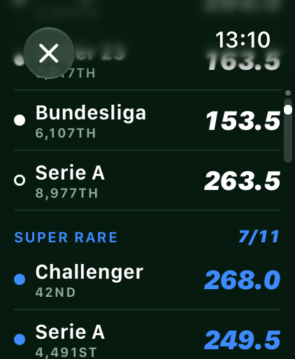
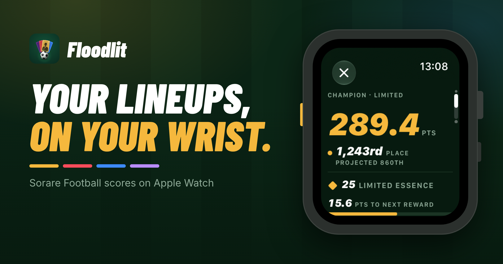

Press kit
In one line
Floodlit puts your Sorare Football lineups on your Apple Watch: live scores, rank, rewards and deadlines at a glance.
Short description
Floodlit is an Apple Watch app for Sorare Football managers. Sign in once on your iPhone with Log in with Sorare, then follow every lineup from your wrist: live player scores, your total and rank, projected finish, the points you need for the next reward, and countdowns to kick-off and lineup lock. It's free to download with your first lineup included, and a one-off £2.99 purchase unlocks every lineup. No subscription, ads or tracking.
Key facts
- Name
- Floodlit
- Platform
- Apple Watch (watchOS 26+) with a companion iPhone app (iOS 26+) for sign-in
- Price
- Free to download (first lineup). £2.99 one-off unlock for every lineup
- Works with
- Sorare Football (not NBA or MLB)
- Sign-in
- Log in with Sorare on Sorare's own page; Floodlit never sees the password
- Privacy
- No ads, no tracking, no analytics. App Store label: Data Not Collected
- Try first
- Built-in demo with sample lineups, no account needed
- Availability
- App Store, UK and many other countries; not currently in the EU
- Made by
- An independent developer and Sorare manager in the UK
- Status
- Independent app, not made, endorsed or sponsored by Sorare
Features
- Start screen totals the rewards you're on track for across every lineup
- Lineups drawn on a pitch, 5 and 7 card, with captain, subs and each card's live score or kick-off time
- Card detail with the player's match and status; Digital Crown moves card by card
- Swipe for total, rank, projected finish and points to the next reward
- Each lineup in its rarity colour; a tidy list for managers with dozens of lineups
- Countdowns to the next kick-off, lineup lock and the next game week deadline
Images
Free to use in coverage of Floodlit. Screens show sample data with fictional players.

 Start screen
Start screen
 Lineup on the pitch
Lineup on the pitch
 Card detail
Card detail
 Total & rank
Total & rank


Lineup list

Banner (1200×630)Contact
info@bewarethechairultra.co.ukPromo codes for reviewers are available on request. App Store: Floodlit on the App Store. On X: @FloodlitApp